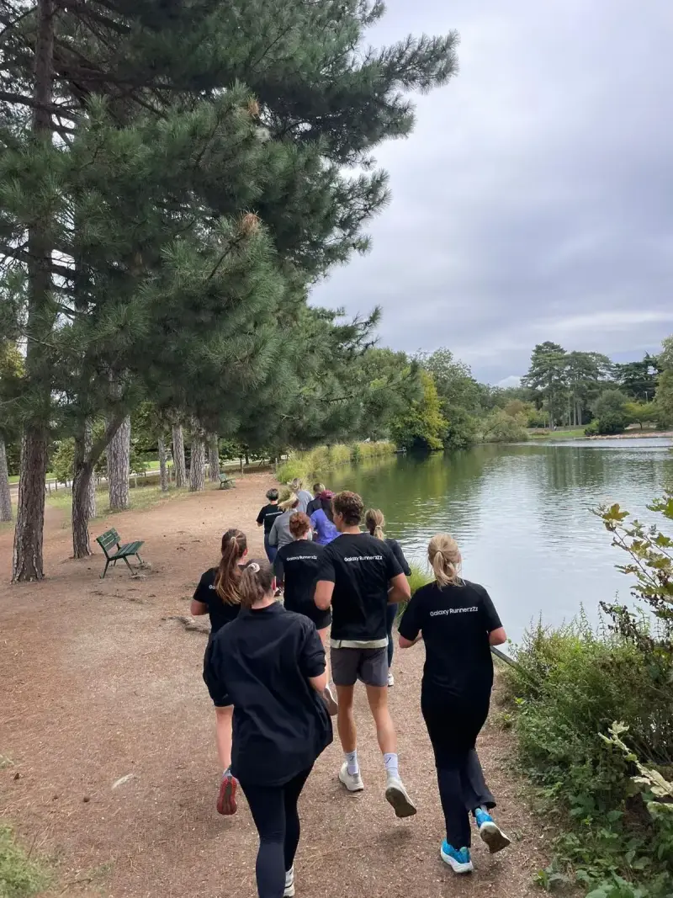
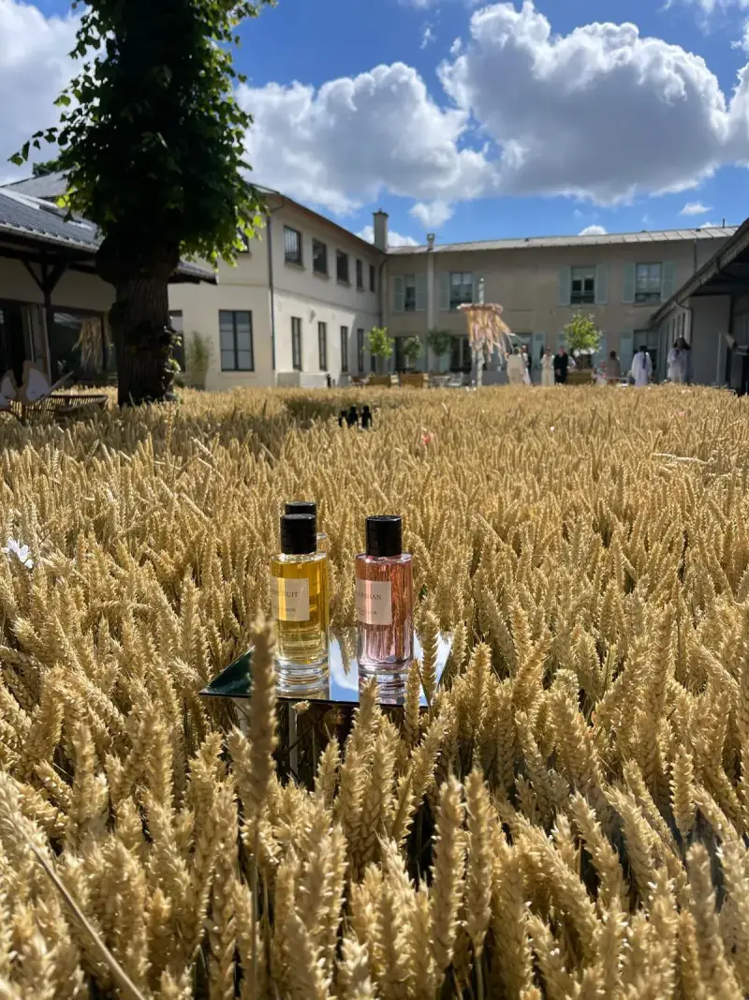
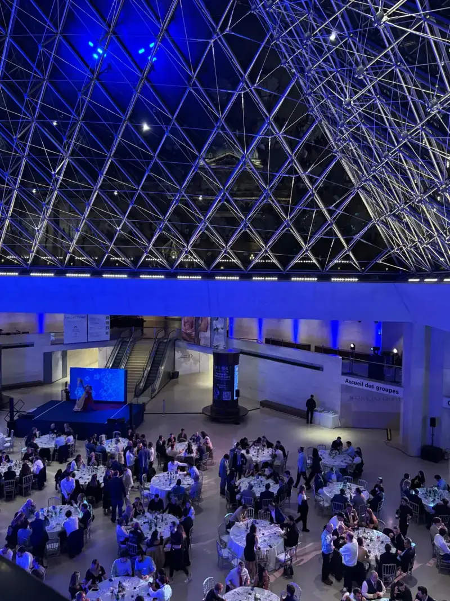
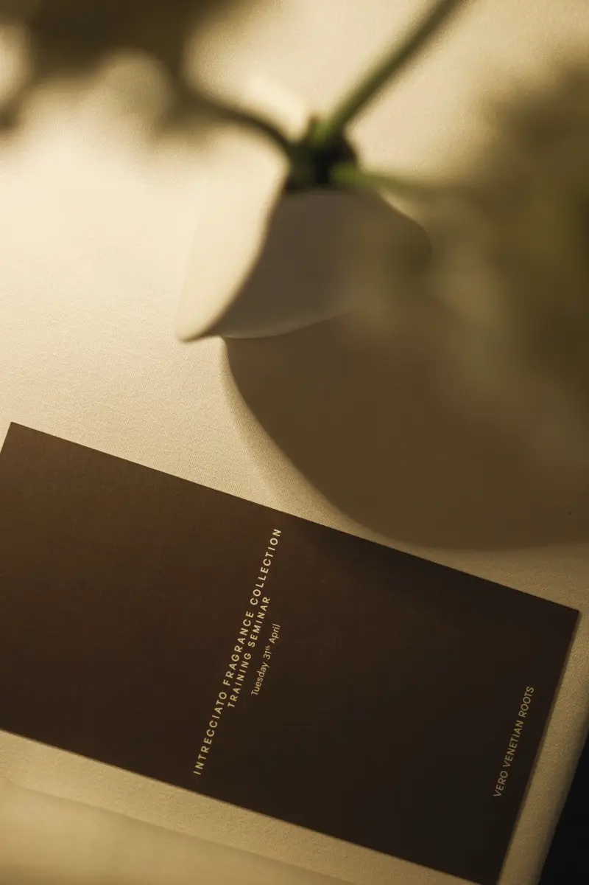

Agence relations presse
événementielle.
Des événements pensés pour la presse dès le premier jour. Le concept, le lieu, le moment fort et l'image à publier sont choisis pour donner aux journalistes l'envie de venir et d'écrire. Nous créons l'événement et nous faisons venir la presse et les créateurs de contenu.
You dare us, we did it.
Réponse sous 24 h.
Que produit l'agence en relations presse événementielles ?
L'agence Dare-Dare crée des événements de marque pensés pour la presse et fait venir les journalistes et les créateurs de contenu : fichier presse ciblé, communiqué et dossier de presse, invitations et relances, accueil presse le jour J, suivi et revue de presse des retombées. Un événement presse à Paris, à Cannes ou au Maroc, de la conférence de presse au voyage de presse.
- Formats
- Conférence de presse, press day, petit-déjeuner presse, avant-première, voyage de presse.
- Où
- Paris, Cannes et le Maroc, ailleurs sur demande.
- Engagement
- Une méthode et un suivi complets. Aucune parution n'est garantie : la presse reste libre.
Prix et jauge
- Prix
- Sur devis détaillé poste par poste, avec le volet événement et le volet presse distincts. Nous n'affichons pas de prix type : chaque projet a le sien.
- Jauge
- Du dîner intimiste au show de plusieurs milliers d'invités. Le même soin, quelle que soit la taille.
Un événement et sa presse,
conçus ensemble dès le départ.
Les relations presse ne s'ajoutent pas après coup. Elles décident du concept, du lieu et du moment fort, avant même la première invitation.
L'événement
et tout le travail presse qui va avec.
Le détail poste par poste
Avant
- Cadrage de l'angle et des objectifs presse avec vous
- Fichier presse relu avec vous, listes séparées : presse, créateurs, VIP
- Communiqué, dossier de presse, visuels et embargos
- Invitations puis relances personnelles
Pendant
- Accueil des journalistes et espace presse
- Kit remis à chaque invité, porte-parole briefés
- Interviews et prises de parole organisées
- Une équipe dédiée à la presse, en retrait du public
Après
- Remerciements et visuels envoyés aux journalistes
- Relance des absents
- Revue de presse des retombées
- Recommandations pour la suite
Un format,
selon l'angle et les journalistes visés.
Conférence de presse
Une annonce, des prises de parole courtes, des questions, un temps d'échange en fin de séance. Pour une nomination, un partenariat, un résultat ou une ouverture.
Press day
Une journée de rendez-vous entre journalistes et porte-parole, dans un décor qui raconte la marque. Pour présenter une collection, une gamme ou un produit à la presse mode, beauté et lifestyle.
Petit-déjeuner presse
Un format court et convivial, plus intime, sans alcool, qui laisse la place à la conversation. Pour une actualité, une tendance, un point de rentrée.
Avant-première
La presse découvre en premier, avant le public : un lancement, une exposition, un lieu, une expérience. Les créateurs de contenu peuvent être invités avec la presse.
Voyage de presse
Plusieurs jours, une destination, un récit. Notre page dédiée détaille la méthode.
Agence voyage de pressePour Samsung, Chanel, Dior, Bottega Veneta, Balenciaga, Longchamp, Mugler, Deloitte, Maybelline, Paris Blockchain Week et un acteur du secteur bancaire. Au Ritz Paris, à la Pyramide du Louvre, au Moulin Rouge et à la Fnac Live.
Des événements de marque pour le luxe, la beauté et la tech, avec presse, créateurs de contenu et invités. Du dîner intimiste au show de plusieurs milliers d'invités.

Dior Parfums, Paris

Paris Blockchain Week, Pyramide du Louvre

Bottega Veneta, Venise
D'abord l'angle.
Ensuite seulement, le lieu.
01 Le cadrage · 02 Les invitations · 03 Le jour J · 04 Le suivi
Notre méthode, étape par étape
Le cadrage. La première question est l'histoire que vous voulez voir racontée, et par qui. Nous formalisons l'angle, le concept, le fichier presse et le plan de l'événement avec vous.
Les invitations. Communiqué, dossier de presse, visuels, puis invitations personnalisées et relances individuelles. Vous validez chaque étape.
Le jour J. Accueil des journalistes, espace presse, kit, interviews. Notre équipe est présente du premier accueil au dernier départ, en retrait.
Le suivi. Remerciements, visuels, relance des absents, puis revue de presse des retombées et recommandations. Le calendrier type est détaillé dans la FAQ.
Paris, Cannes, Maroc.
Les marques à Paris, les entreprises entre Paris et le Maroc : un même soin pour la presse.
Paris
Le cœur de la presse mode, beauté et luxe : conférence de presse, press day et avant-première pour les marques, dans des lieux confidentiels ou iconiques.
Agence événementielle à ParisCannes et la Côte d'Azur
En saison, autour du Festival et des Lions : un format presse pour les marques de beauté, de mode et de lifestyle.
Agence événementielle à CannesMaroc
Pour les entreprises entre Paris et le Maroc : un événement à Casablanca ou à Marrakech, avec des journalistes ciblés, y compris la presse locale, et notre réseau de prestataires sur place.
Agence événementielle à MarrakechQuestions fréquentes
sur les relations presse événementielles
Qu'est-ce qu'une agence de relations presse événementielle ?
C'est une agence qui crée l'événement de marque et organise la présence de la presse autour de lui : fichier presse, communiqué, invitations, accueil des journalistes, suivi des retombées. Chez Dare-Dare, les deux sont pensés ensemble dès le départ : le concept, le lieu et le moment fort sont choisis pour donner envie aux journalistes de venir et d'écrire.
Garantissez-vous des articles ou des retombées ?
Non. La presse est libre et aucune agence sérieuse ne peut garantir une parution. Nous nous engageons sur la méthode : un fichier ciblé, des invitations personnalisées, des relances, un accueil soigné et un suivi complet. Chaque retombée est ensuite recensée dans une revue de presse.
Quels formats d'événement presse proposez-vous ?
Conférence de presse, press day (une journée de rendez-vous entre journalistes et porte-parole), petit-déjeuner presse, avant-première, soirée de lancement ouverte à la presse et aux créateurs de contenu, et voyage de presse sur plusieurs jours. Le format est choisi selon l'angle, le message et les journalistes visés.
Quel est le calendrier type d'un événement presse ?
Calendrier type, adapté à chaque projet. J-45 : cadrage de l'angle, du concept et du fichier presse. J-30 : communiqué, dossier de presse et visuels. J-21 : invitations personnalisées. J-10 : relances individuelles et confirmations. J-3 : brief des porte-parole et préparation de l'espace presse. Jour J : accueil, interviews, kit. J+1 : remerciements et visuels. J+5 : relance des absents. J+15 : revue de presse et bilan.
Combien coûte un événement avec relations presse ?
Le budget dépend du format, du lieu, du nombre d'invités et de l'ampleur du travail presse. Nous n'affichons pas de prix type : réponse sous 24 h, devis détaillé poste par poste, avec le volet événement et le volet presse distincts.
Comment gérez-vous la loi Évin et les embargos ?
Les embargos sont inscrits dans l'invitation et le dossier de presse, et respectés dans le calendrier. Si la marque est un alcool, la loi Évin encadre la communication : nous la vérifions pour le communiqué, l'invitation et les visuels.
Presse, influence, lancements et destinations.
- Accueil : agence événementielle Paris, Cannes, Maroc
- Agence voyage de presse
- Agence événement influence
- Agence lancement de produit
- Événements Fashion Week Paris
- Communication événementielle
- Organiser un voyage de presse : la méthode en 7 étapes
- Agence événementielle à Paris
- Agence événementielle à Cannes
- Agence événementielle à Marrakech
- Nos idées : si nous étions une marque de…
Un événement et sa presse en tête ? Écrivez-nous : réponse sous 24 h.
Je vous mets
au défi de…
Un défi, une idée, un lieu : réponse sous 24 h, avec une première idée.
Votre événement,
vos journalistes.
Une marque, un événement, une presse à faire venir ? Écrivez-nous. Réponse sous 24 h.
Réserver un appel de 15 minutes · WhatsApp · contact@agence-dare-dare.fr · +33 6 81 96 93 62
Un événement peut aussi faire du bien : nous visons à reverser 1 à 2 % de nos bénéfices chaque année à l'Association Petits Princes, et nous accueillons des stagiaires. Notre charte RSE